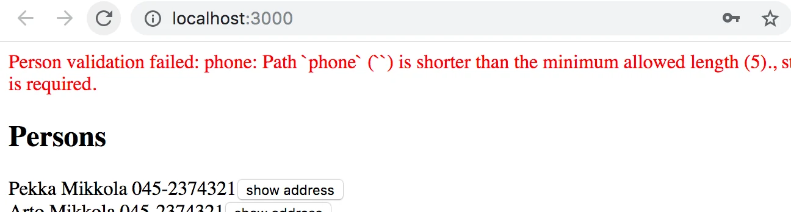
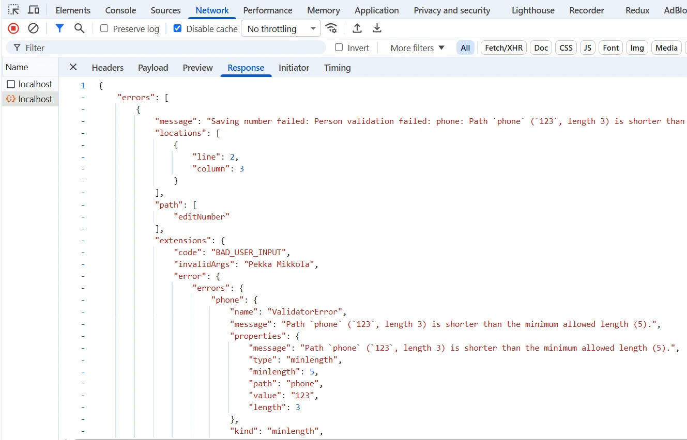
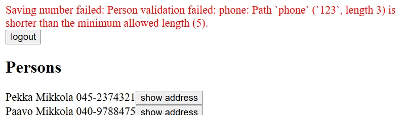

تسجيل الدخول وتحديث الذاكرة المؤقتة
تعرض الواجهة الأمامية لتطبيقنا دليل الهاتف بشكل جيد مع الخادم المحدّث. لكن إذا أردنا إضافة أشخاص جدد، فعلينا إضافة وظيفة تسجيل الدخول إلى الواجهة الأمامية.
تسجيل دخول المستخدم
لنُعرّف أولاً الـ mutation الخاصة بتسجيل الدخول في الملف src/queries.js:
export const LOGIN = gql`
mutation login($username: String!, $password: String!) {
login(username: $username, password: $password) {
value
}
}
`
لنُعرّف المكوّن LoginForm المسؤول عن تسجيل الدخول في الملف src/components/LoginForm.jsx. وهو يعمل بالطريقة نفسها تقريباً التي تعمل بها المكوّنات السابقة التي تتعامل مع الـ mutations. الأسطر المهمة مُبرَزة في الشيفرة:
import { useState } from 'react'
import { useMutation } from '@apollo/client/react'
import { LOGIN } from '../queries'
const LoginForm = ({ setError, setToken }) => { // HIGHLIGHT LINE
const [username, setUsername] = useState('')
const [password, setPassword] = useState('')
// BEGIN HIGHLIGHT
const [ login ] = useMutation(LOGIN, {
onCompleted: (data) => {
const token = data.login.value
setToken(token)
localStorage.setItem('phonebook-user-token', token)
},
onError: (error) => {
setError(error.message)
}
})
// END HIGHLIGHT
// BEGIN HIGHLIGHT
const submit = (event) => {
event.preventDefault()
login({ variables: { username, password } })
}
// END HIGHLIGHT
return (
<div>
<form onSubmit={submit}>
<div>
username <input
value={username}
onChange={({ target }) => setUsername(target.value)}
/>
</div>
<div>
password <input
type='password'
value={password}
onChange={({ target }) => setPassword(target.value)}
/>
</div>
<button type='submit'>login</button>
</form>
</div>
)
}
export default LoginForm
يتلقّى المكوّن الدالتين setError وsetToken كـ props، ويمكن استخدامهما لتغيير حالة التطبيق. ويُترك تعريف إدارة الحالة إلى المكوّن App.
بالنسبة إلى دالة useMutation التي تنفّذ تسجيل الدخول، تُعرَّف دالة استدعاء راجعة (callback) باسم onCompleted. وتُستدعى هذه الدالة عند تنفيذ الـ mutation بنجاح. وفي دالة الاستدعاء الراجعة، تُقرأ قيمة token من بيانات الاستجابة ثم تُخزَّن في حالة التطبيق وفي localStorage الخاص بالمتصفح.
لنستخدم الآن مكوّن LoginForm في ملف App.jsx. نضيف متغير token إلى حالة التطبيق لتخزين token بعد تسجيل دخول المستخدم. وإذا لم يكن token معرَّفاً، نعرض نموذج تسجيل الدخول فقط:
import LoginForm from './components/LoginForm' // HIGHLIGHT LINE
// ...
const App = () => {
const [token, setToken] = useState(localStorage.getItem('phonebook-user-token')) // HIGHLIGHT LINE
const [errorMessage, setErrorMessage] = useState(null)
const result = useQuery(ALL_PERSONS)
if (result.loading) {
return <div>loading...</div>
}
const notify = (message) => {
setErrorMessage(message)
setTimeout(() => {
setErrorMessage(null)
}, 10000)
}
// BEGIN HIGHLIGHT
if (!token) {
return (
<div>
<Notify errorMessage={errorMessage} />
<h2>Login</h2>
<LoginForm
setToken={setToken}
setError={notify}
/>
</div>
)
}
// END HIGHLIGHT
return (
// ...
)
}
يُهيَّأ token الآن من قيمة token قد توجد في localStorage:
const [token, setToken] = useState(localStorage.getItem('phonebook-user-token'))
بهذه الطريقة، يُستعاد token أيضاً عند إعادة تحميل الصفحة، ويبقى المستخدم مسجّلاً الدخول. وإذا لم يحتوي localStorage على قيمة للمفتاح phonebook-user-token، فستكون قيمة token هي null.
نضيف أيضاً زراً يسمح للمستخدم المسجّل الدخول بتسجيل الخروج. في معالج النقر على الزر، نضبط token على null، ونحذف token من localStorage، ونعيد تعيين الذاكرة المؤقتة الخاصة بـ Apollo Client:
import { useApolloClient, useQuery } from '@apollo/client/react' // HIGHLIGHT LINE
//...
const App = () => {
const [token, setToken] = useState(null)
const [errorMessage, setErrorMessage] = useState(null)
const result = useQuery(ALL_PERSONS)
const client = useApolloClient() // HIGHLIGHT LINE
if (result.loading) {
return <div>loading...</div>
}
// BEGIN HIGHLIGHT
const onLogout = () => {
setToken(null)
localStorage.clear()
client.resetStore()
}
// END HIGHLIGHT
// ...
return (
<>
<Notify errorMessage={errorMessage} />
<button onClick={onLogout}>logout</button> // HIGHLIGHT LINE
<Persons persons={result.data.allPersons} />
<PersonForm setError={notify} />
<PhoneForm setError={notify} />
</>
)
}
تتم إعادة تعيين الذاكرة المؤقتة باستخدام الدالة resetStore في كائن Apollo client، ويمكن الوصول إلى client نفسه عبر الخطاف useApolloClient. ومسح الذاكرة المؤقتة مهم، لأن بعض الاستعلامات قد تكون جلبت بيانات إلى الذاكرة المؤقتة لا يُسمح بالوصول إليها إلا لمستخدم مُصادَق عليه.
إضافة token إلى الترويسة
بعد تغييرات الواجهة الخلفية، تتطلب إضافة أشخاص جدد إرسال token صالح للمستخدم مع الطلب. وهذا يتطلب تغييرات في تهيئة Apollo Client في ملف main.jsx:
import { StrictMode } from 'react'
import { createRoot } from 'react-dom/client'
import App from './App.jsx'
import { ApolloClient, HttpLink, InMemoryCache } from '@apollo/client'
import { ApolloProvider } from '@apollo/client/react'
import { SetContextLink } from '@apollo/client/link/context' // HIGHLIGHT LINE
// BEGIN HIGHLIGHT
const authLink = new SetContextLink(({ headers }) => {
const token = localStorage.getItem('phonebook-user-token')
return {
headers: {
...headers,
authorization: token ? `Bearer ${token}` : null,
}
}
})
// END HIGHLIGHT
const httpLink = new HttpLink({ uri: 'http://localhost:4000' }) // HIGHLIGHT LINE
// BEGIN HIGHLIGHT
const client = new ApolloClient({
cache: new InMemoryCache(),
link: authLink.concat(httpLink)
})
// END HIGHLIGHT
createRoot(document.getElementById('root')).render(
<StrictMode>
<ApolloProvider client={client}>
<App />
</ApolloProvider>
</StrictMode>,
)
كما في السابق، يُغلَّف عنوان URL الخاص بالخادم باستخدام مُنشئ HttpLink لإنشاء كائن httpLink مناسب. لكن هذه المرة، يُعدَّل باستخدام context المعرَّف بواسطة كائن authLink بحيث تُضبط ترويسة authorization لكل طلب على token الذي قد يكون مخزَّناً في localStorage.
تعمل إضافة الأشخاص الجدد وتغيير الأرقام مرة أخرى.
إصلاح التحققات
في التطبيق، ينبغي أن يكون ممكناً إضافة شخص دون رقم هاتف. لكن إذا حاولنا الآن إضافة شخص دون رقم هاتف، فلن ينجح الأمر:

يفشل التحقق، لأن الواجهة الأمامية ترسل نصاً فارغاً كقيمة للحقل phone.
لنغيّر الدالة التي تنشئ أشخاصاً جدد بحيث تضبط phone على undefined إذا لم يُدخل المستخدم قيمة:
const PersonForm = ({ setError }) => {
// ...
const submit = async (event) => {
event.preventDefault()
// BEGIN HIGHLIGHT
createPerson({
variables: {
name,
street,
city,
phone: phone.length > 0 ? phone : undefined,
},
})
// END HIGHLIGHT
setName('')
setPhone('')
setStreet('')
setCity('')
}
// ...
}
من منظور الواجهة الخلفية وقاعدة البيانات، لم تعد لسمة phone قيمة إذا ترك المستخدم الحقل فارغاً. وتعمل إضافة شخص دون رقم هاتف مرة أخرى.
هناك أيضاً مشكلة في وظيفة تغيير رقم الهاتف. فتحققات قاعدة البيانات تشترط أن يكون رقم الهاتف 5 محارف على الأقل، لكن إذا حاولنا تحديث رقم هاتف شخص موجود إلى رقم قصير جداً، فلا يبدو أن شيئاً يحدث. لا يُحدَّث رقم هاتف الشخص، لكن في المقابل لا تظهر رسالة خطأ أيضاً.
من تبويب Network في وحدة التحكم يمكننا أن نرى أن الطلب يُجاب برسالة خطأ:

لنعدّل التطبيق بحيث تظهر أخطاء التحقق أيضاً عند تغيير رقم هاتف:
const PhoneForm = ({ setError }) => {
// ...
const submit = async (event) => {
event.preventDefault()
// BEGIN HIGHLIGHT
try {
await changeNumber({ variables: { name, phone } })
} catch (error) {
setError(error.message)
}
// END HIGHLIGHT
setName('')
setPhone('')
}
// ...
}
الطلب الذي يحدّث الرقم، changeNumber، يُنفَّذ الآن داخل كتلة try. وإذا فشلت تحققات قاعدة البيانات، ينتهي التنفيذ في كتلة catch، حيث تُضبط رسالة خطأ مناسبة في التطبيق باستخدام الدالة setError:

تحديث الذاكرة المؤقتة مرة أخرى
علينا تحديث الذاكرة المؤقتة لعميل Apollo عند إنشاء أشخاص جدد. يمكننا تحديثها باستخدام خيار refetchQueries الخاص بالـ mutation لتحديد إعادة تنفيذ استعلام ALL_PERSONS.
const PersonForm = ({ setError }) => {
// ...
const [createPerson] = useMutation(CREATE_PERSON, {
onError: (error) => setError(error.message),
refetchQueries: [{ query: ALL_PERSONS }], // HIGHLIGHT LINE
})
// ...
}
هذا الأسلوب جيد جداً، وعيبه أن الاستعلام يُعاد تنفيذه دائماً مع أي تحديثات.
من الممكن تحسين الحل بتحديث الذاكرة المؤقتة يدوياً. ويتم ذلك بتعريف دالة استدعاء راجعة update مناسبة للـ mutation بدلاً من استخدام السمة refetchQueries. ينفّذ Apollo دالة الاستدعاء الراجعة هذه بعد اكتمال الـ mutation:
const PersonForm = ({ setError }) => {
// ...
const [createPerson] = useMutation(CREATE_PERSON, {
onError: (error) => setError(error.message),
// BEGIN HIGHLIGHT
update: (cache, response) => {
cache.updateQuery({ query: ALL_PERSONS }, ({ allPersons }) => {
return {
allPersons: allPersons.concat(response.data.addPerson),
}
})
},
// END HIGHLIGHT
})
// ..
}
تُعطى دالة الاستدعاء الراجعة مرجعاً إلى الذاكرة المؤقتة والبيانات التي أعادتها الـ mutation كمعاملات. وفي حالتنا مثلاً، ستكون هذه البيانات هي الشخص المُنشأ.
وباستخدام الدالة updateQuery تحدّث الشيفرة استعلام ALLPERSONS في الذاكرة المؤقتة بإضافة الشخص الجديد إلى البيانات المخزَّنة مؤقتاً.
في بعض الحالات، تكون دالة الاستدعاء الراجعة update هي الطريقة المعقولة الوحيدة لإبقاء الذاكرة المؤقتة محدَّثة.
عند الحاجة، يمكن تعطيل الذاكرة المؤقتة للتطبيق بأكمله أو لاستعلامات منفردة بضبط الحقل الذي يدير استخدام الذاكرة المؤقتة، fetchPolicy على no-cache.
كن مجتهداً مع الذاكرة المؤقتة. فالبيانات القديمة فيها قد تسبب أخطاء يصعب العثور عليها. وكما نعلم، فإن إبقاء الذاكرة المؤقتة محدَّثة أمر صعب جداً. وحسب مثل شائع بين المبرمجين:
هناك شيئان صعبان فقط في علوم الحاسوب: إبطال صلاحية الذاكرة المؤقتة وتسمية الأشياء. اقرأ المزيد هنا.
يمكن العثور على الشيفرة الحالية للتطبيق على Github، في الفرع part8-5.
18. سرد الكتب
19. تسجيل الدخول
20. الكتب حسب النوع، الجزء 1
21. الكتب حسب النوع، الجزء 2
22. الكتب حسب النوع باستخدام GraphQL
23. الذاكرة المؤقتة المحدَّثة وتوصيات الكتب
24. فحص